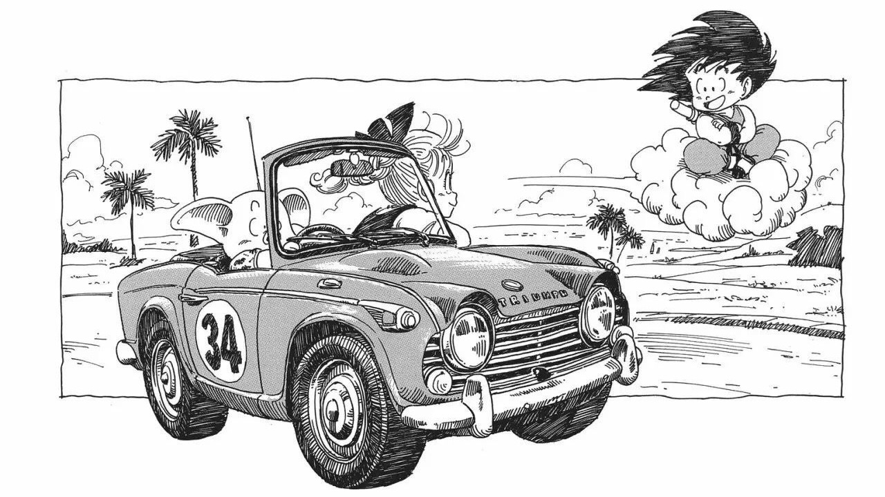
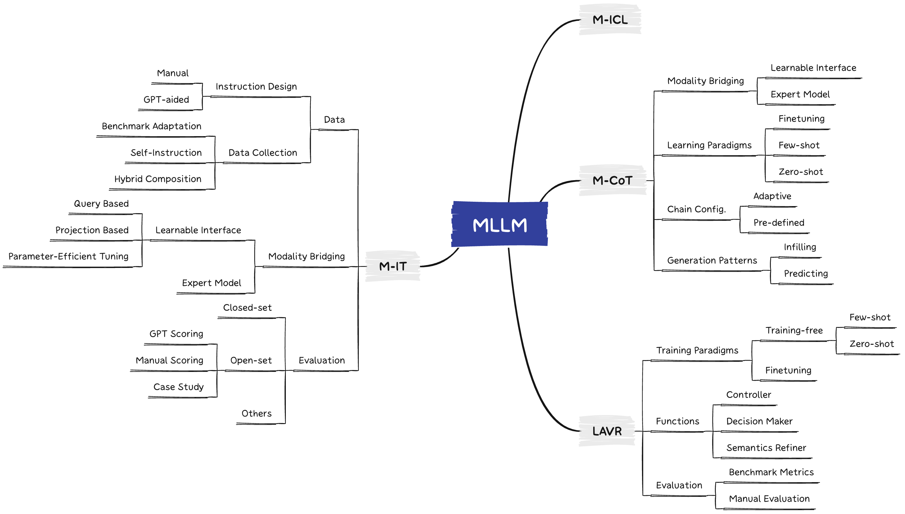
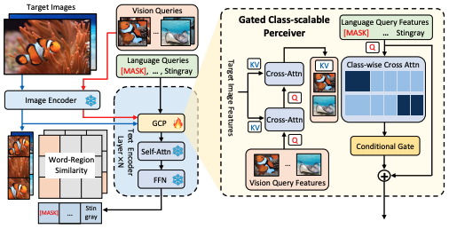

|  |
Chaoyou Fu
|
Biography
I am a senior researcher at Tencent Youtu Lab. Before that, I obtained my Ph.D. degree from CRIPAC-NLPR-CASIA in 2022, under the leadership of Prof. Tieniu Tan and the supervision of Prof. Ran He. I received my B.E. degree from Anhui University in 2017, where I was advised by Prof. Shuping He.
My current research interests mainly focus on biometrics (especially face recognition and generation) and multimodality (especially vision+language).
I am open to any discussion or collaboration. If you are interested, please feel free to contact me.
Selected Publications
|  |
A Survey on Multimodal Large Language Models |
 |
MME: A Comprehensive Evaluation Benchmark for Multimodal Large Language Models |
 |
Woodpecker: Hallucination Correction for Multimodal Large Language Models |
|  |
Multi-Modal Queried Object Detection in the Wild |
 |
DVG-Face: Dual Variational Generation for Heterogeneous Face Recognition |
 |
Towards Lightweight Pixel-Wise Hallucination for Heterogeneous Face Recognition |
 |
High Fidelity Face Manipulation with Extreme Poses and Expressions |
 |
CM-NAS: Cross-Modality Neural Architecture Search for Visible-Infrared Person Re-Identification |
Academic Services
Conference Reviewer: NeurIPS, ICLR, ICML, CVPR, ICCV, ECCV, AAAI, ACM MM, IJCAI
Journal Reviewer: IEEE TIP, PR
Honors and Awards
[2023.08] 中国科学院优秀博士学位论文
[2023.07] IEEE Biometrics Council Best Doctoral Dissertation Award
[2023.07] CVPR 2023 Outstanding Reviewer (232/7000+)
[2022.07] 中国科学院院长特别奖
[2022.07] 北京市优秀毕业生
[2021.12] 2022年“阿里星”计划
[2021.12] 博士研究生国家奖学金
[2021.11] 宝钢奖学金优秀学生奖
[2019.12] 硕士研究生国家奖学金
[2017.06] 安徽省优秀毕业生
[2015.11] 本科生国家奖学金
[2015.08] “飞思卡尔”杯全国大学生智能汽车竞赛全国总决赛二等奖